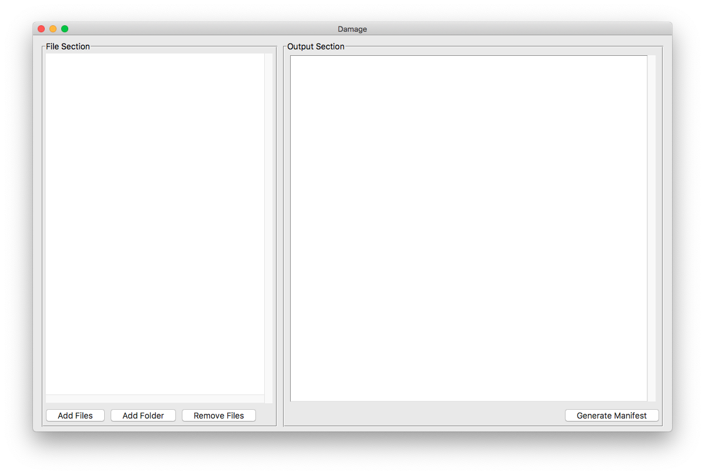
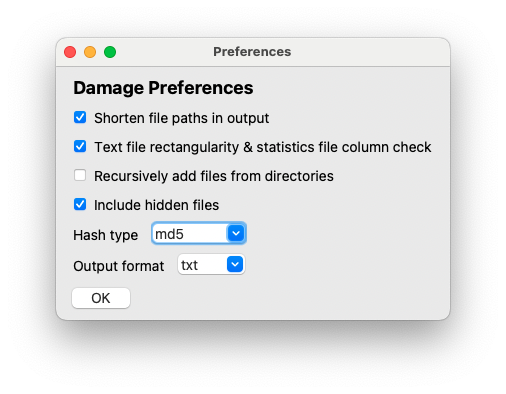
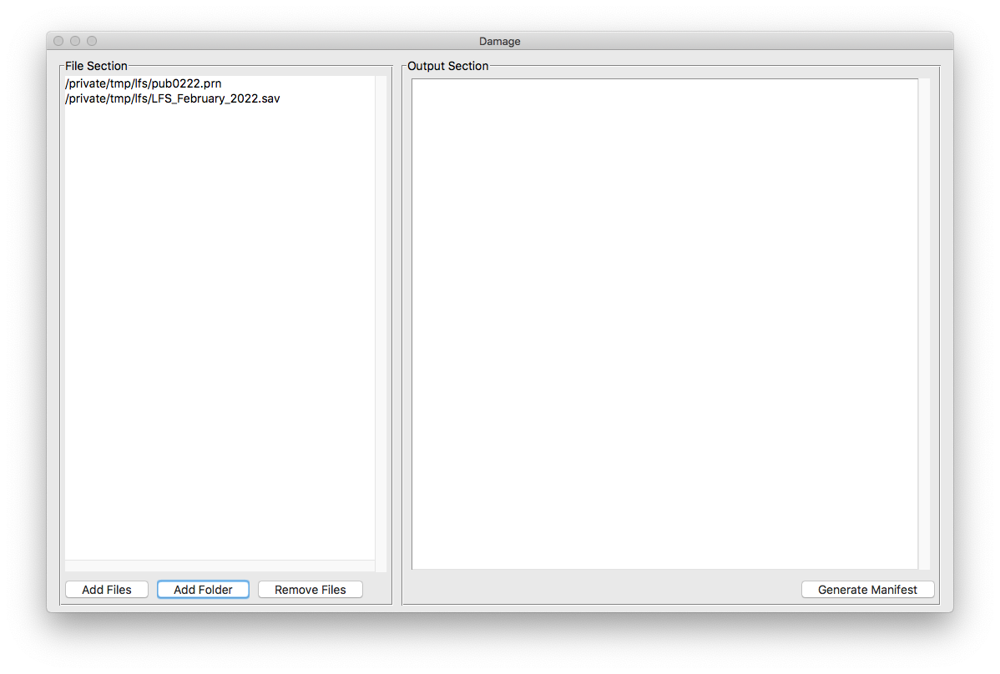
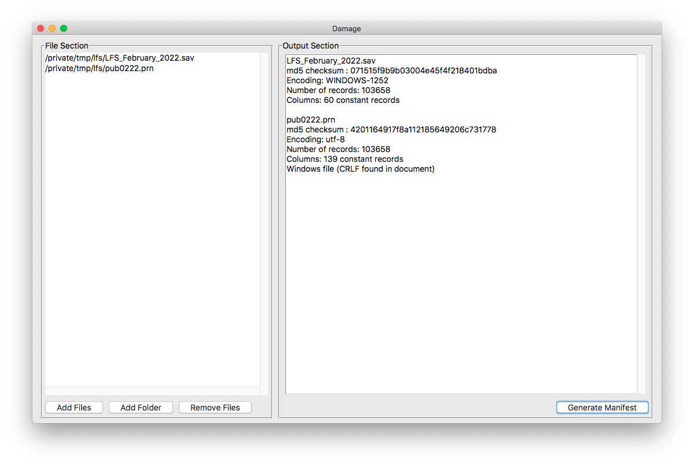
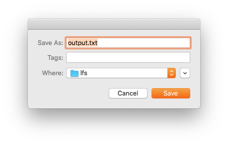

How to use the Damage application¶
Installation¶
For all versions of Damage, download the latest release for your platform from the Github releases page. Note that releases for all architectures are not available, nor will there necessarily be compiled binary releases every time. However, if you install via pipx or pip, you will always get the newest possible release.
Using the precompiled binary files¶
The precompiled versions are just “normal” programs. The command line utility is not included. See the the note if you’ve installed with pipx or pip.
For Microsoft Windows¶
The Windows application is a portable file; it does not require installation. Simply unzip it and run damage.exe. Move it to wherever you like; the Program Files directory is a common choice.
For MacOS¶
Double-click the DMG file, and it should automatically appear in a Finder window. Drag the icon to the Applications folder. If, for some reason, you don’t want to put it in the Applications folder, you can drag it somewhere else.
Note that the developer(s) of Damage do not have an Apple developer account. This means that you may receive a warning about an unidentified developer as per this page: https://support.apple.com/en-ca/guide/mac-help/mh40616/mac. To start the application (for the first time only), you may have to right click on the application, select Open then agree to the conditions. Or whatever it is Apple decide to do, because it changes from release to release.
For Linux¶
I no longer have an x86_64 or AMD64 processor Linux OS, so there is no guarantee that Linux will be represented as a download. Such is life.
Unzip the download. Like the Windows utility, it is a single file. Traditionally, you can place that file in /usr/local/bin or opt/bin, or if that is not a solution, another user-centred location is ~/.local/bin.
Usage¶
On running the application, you will be presented with an essentially blank interface.

The workflow consists of the following easy steps:
- Set your preferences
- Select files
- Create the manifest
- Save (or print) the output
The Preferences window¶
The output of Damage, like all other software, will be dependent on the preferences you set. While the defaults are fine, you may need to match your output to someone else’s manifest, or you don’t like what the defaults are. To do this, use the Preferences window, available via the Edit/Preferences menu item.

The options
-
Shorten file paths in output: Given a list of files, the common portion of the file path will be removed in the output. For example, given two files
path/to/dir_a/x.txtandpath/to/dir_b/y.txt, the output will showdir_a/x.txtanddir_b/y.txt. -
Rectangularity check: For plain text files and statistical software files, check for line length and number of records. If a text file is meant to be a rectangular file, ie, each record or line contains the same number of observations, thus having the same line length, then the output will show
constant records, and all the lines will have the same length. In the case of statistical files, the line length refers to the number of fields, ie, variables. If, for instance, the value is not constant, that means that the data set is truncated. -
Recursively add files from directories: When adding a folder, add all the files found in sub-folders as well. So, if folder A contains folders B and C, any files found in A, B and C will be added, all the way to to the point where no further folders are found.
-
Include hidden files: While there are many ways to hide files, this checkbox will include files that begin with
., such as.DS_Store. Or, if you are using directories, it will include files in directories such as.git. Normally this would be unchecked unless you have a special use case. -
Hash type: Cryptographic hash algorithm used to check for file integrity. The most commonly used are likely
md5andsha256. If checking downloaded files for integrity, use the algorithm stated on the download site. For example, on the release page for this software product, you will see that the download checksums are listed assha256. If checksums don’t match, then file integrity is compromised. -
Output format: Output format of the resulting manifest.
- txt: Human readable plain text format
- csv: Comma separated value spreadsheet
- json: Javascript Object Notation dictionary for times when machine readable output is required.
Selecting files¶
You have several options to select files to analyze. Add individual files with either the Add Files button or the the menu under Files/Add Files
If you would like to add an entire folder of files, select the Add Folder button or the Files/Add Folder menu.
Files (with their full paths) will be added to the left sidebar, or File Section.
In some cases, what seems like a file doesn’t appear in the list. For instance, should you attempt to add a Mac application (which, in the Finder, looks like a single item), it will be ignored. Mac Applications are really folders, despite looking like single files. Should you really need to add an item such as this, use the Add Folder function.

Removing files¶
If you wish to edit the list of files, select the files you wish to remove from the File Section and use the Remove Files button, or use the convenient menu item Files/Remove Files
Generating the manifest¶
To generate the manifest for your selected files, hit the Generate Manifest button, use the Actions/Create Manifest menu item, or use the plaform specific short combination. Note that this operation may take a while depending on the size and complexity of the file(s) you are analyzing. Notably, statistical files with hundreds of thousands of records (or millions) may take a while. Don’t assume the application has crashed if results are not instant.
Once completed, the output is shown in the cleverly labelled Output Section. At this point, you can edit the results (although it’s not clear why you would). More importantly, though, the saving and printing options will now be available.

Output¶
To save, select Actions/Save Output or use the shortcut key combination. The output will be saved with the correct extension automatically.
To print, select Actions/Print Output or use the shortcut key combination. The output will be sent immediately to your default printer.

Note: There is no printer selection and formatting dialogue; the manifest is sent to the printer as plain text. Note that in the case of csv files, this means that you will get raw csv, not a nice table.
If you require nicely tabulated and formatted data, use a spreadsheet to open the created csv file.
The Help menu¶
-
Damage help: takes you to this page. Obviously, this requires an internet connection, but what doesn’t these days
-
Credits and Details: Developer information as well as links to the source code.